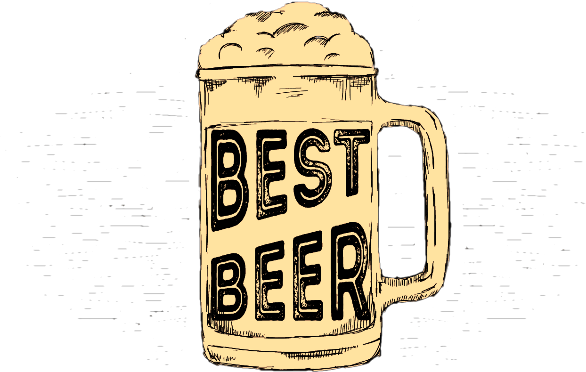

Bar Chats
With Jay & Duce
With Jay & Duce
Join us on our journey through Local breweries in your backyards and ours While we talk about serious yet not so serious topics about life family and friends.


